Історична карта 1945 року
Перейти до картиІсторії Українців:
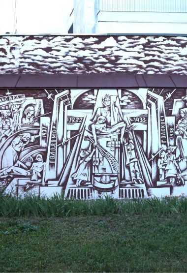
Пам’яті жертв голодоморів
Пам’яті жертв голодоморів. Супротив народу і страх влади до розгортання повстань
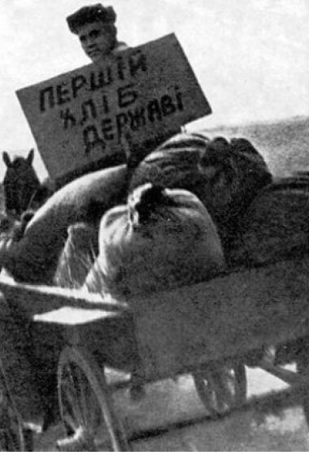
Буденне життя селян
1934-1935 років
за матеріалами, збереженими в фондах політвідділів МТС.На прикладі с. Вівсяники Козятинського р. Вінницької обл.
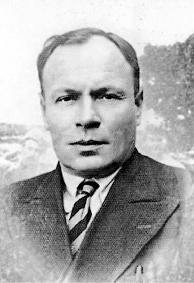
Яків Гальчевський-Орел
Отаман Подільської повстанської групи
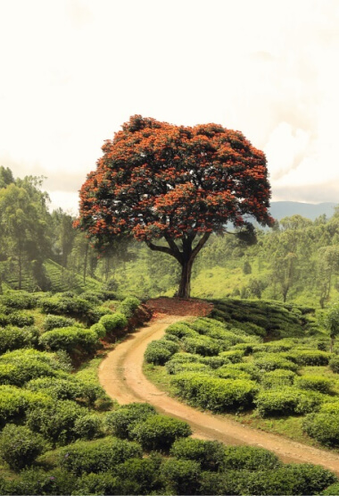
Як граф Ржевуський та поміщик Собанський за землю сперечалися
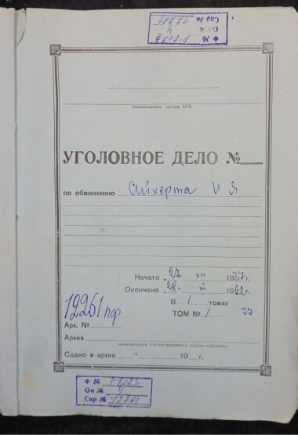
Справа Айхерта Івана Якубовича
Репресивна м'ясорубка радянської влади.
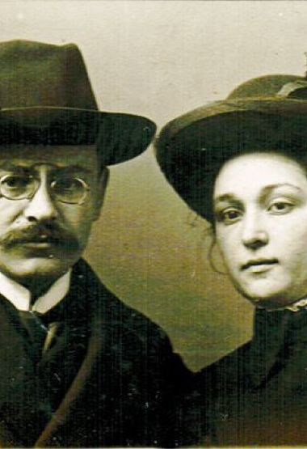
Володимир Іванович Барвінок
Видатний український архівіст
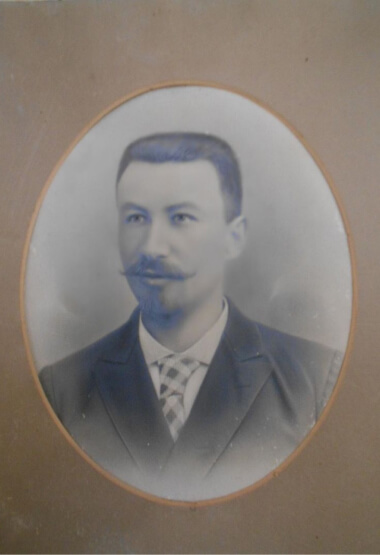
Олександр Кирилович Холодкевич
Нелегка доля священика.
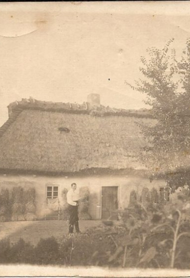
Історія однієї світлини
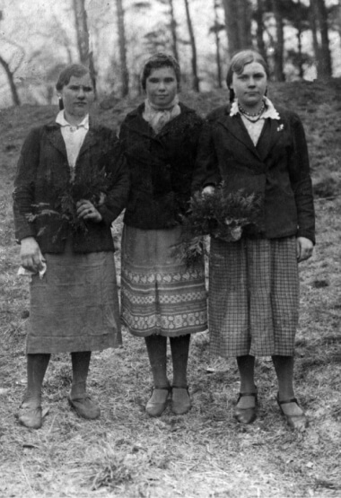
Поріднити можуть не лише родинні зв’язки
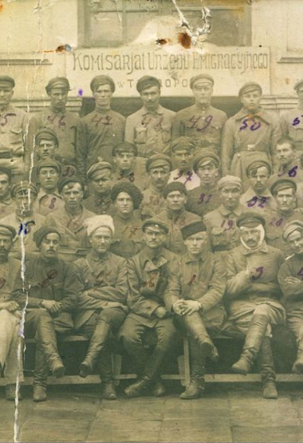
Марія Гальчевська
Історії з архівів СБУ: Марія Гальчевська, дружина отамана Якова Гальчевського.
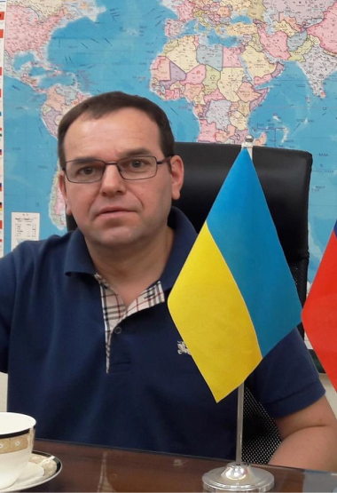
Юрій Слісарук
Учасник Студентської революції на граніті : Мені здається, що нас тоді злили…
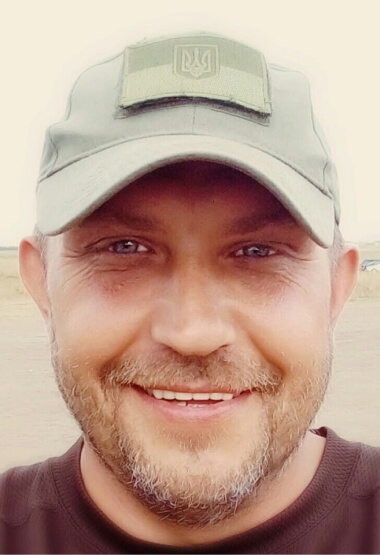
Владислав Борисовський
Історія кримського добровольця
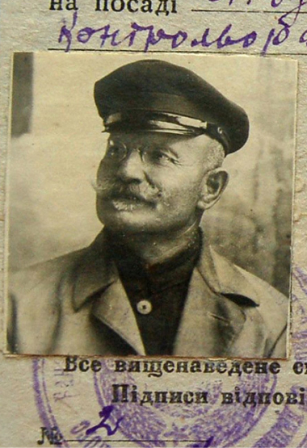
Історія Омеляна Плахотника
Як 60-річний офіцер-інвалід витримав безперервний тижневий допит НКВС
В"язень Маутгаузену та Магадану
Він потрапив у полон на початку війни у 1941 році.
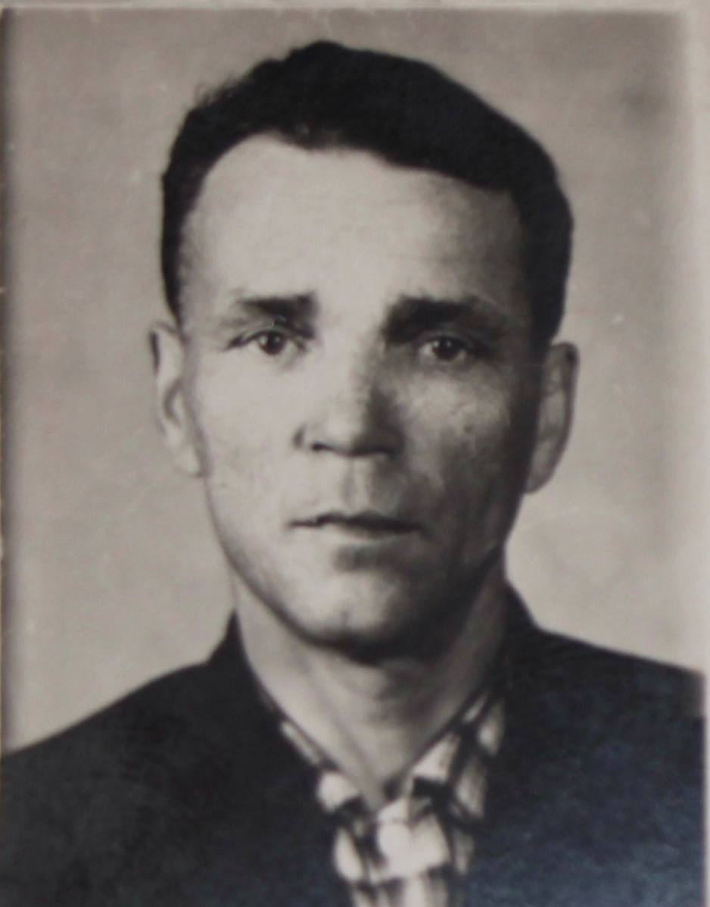
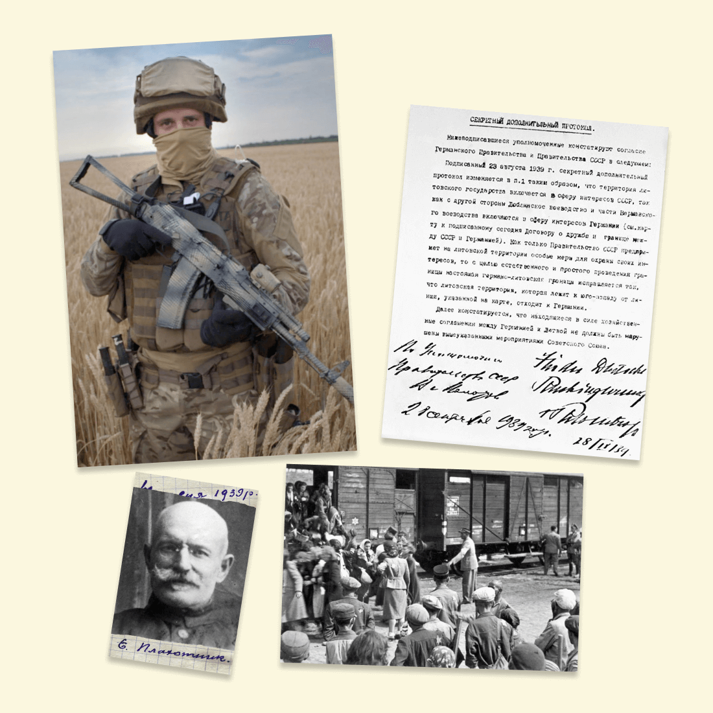
НАВІЩО ЦЕЙ САЙТ
Останні роки у всьому світі стають популярними проекти, які збирають та поширюють усну історію. Європейці впроваджують десятки таких проектів, як мають на меті одну ціль: заохотити людей вивчати свою історію, історію своїх родин, містечок та сіл та сформувати культуру колективної пам'яті.
У нас в Україні, через репресії, розстріли, депортації та в'язниці колективну пам'ять нашого народу намагались знищити. Наші предки боялись публічно розказувати хто вони, як жили, про що думали і як відносились до влади. Мовчали про розстріляних, загублених, розділених війнами, винищених пропагандою. Бо можуть прийти і забрати...Історії переповідали тільки своїм найближчим в тісному сімейному колі. А коли вони помирали то історії цілих родин помирали разом з ними.
Поспілкувавшись із друзями й однодумцями, ми вирішили, що нам, українцям, варто створити продукт, який би зберігав нашу колективну пам'ять, заставляв задумуватись , переглядати та переосмислювати історію через пам'ять наших родин? Адже кожен із нас має родинну історію, яку ми розповідаємо нашим дітям, онукам, згадуємо збираючись разом на свята. З часом ці історії затираються в пам'яті, губляться деталі та просто зникають, відходячи у небуття разом з нашими померлими. Тепер з народженням цього сайту ваші історії житимуть. Ви можете публікувати їх на сайті, ділитись ними з іншими, пересилати їх своїм друзям та рідним, вивчати, як ці історії розповідають і досліджують інші, надихаючись їх прикладом. І можливо, одного дня ви полюбите історію так, як любимо її ми, ті, що створили "Українські історії"...
Поспілкувавшись із друзями й однодумцями, ми вирішили, що нам, українцям, варто створити продукт, який би зберігав нашу колективну пам'ять, заставляв задумуватись , переглядати та переосмислювати історію через пам'ять наших родин? Адже кожен із нас має родинну історію, яку ми розповідаємо нашим дітям, онукам, згадуємо збираючись разом на свята. З часом ці історії затираються в пам'яті, губляться деталі та просто зникають, відходячи у небуття разом з нашими померлими. Тепер з народженням цього сайту ваші історії житимуть. Ви можете публікувати їх на сайті, ділитись ними з іншими, пересилати їх своїм друзям та рідним, вивчати, як ці історії розповідають і досліджують інші, надихаючись їх прикладом. І можливо, одного дня ви полюбите історію так, як любимо її ми, ті, що створили "Українські історії"...
Наші спонсори
Ми щиро дякуємо за підтримку проекту нашим спонсорам та менторам
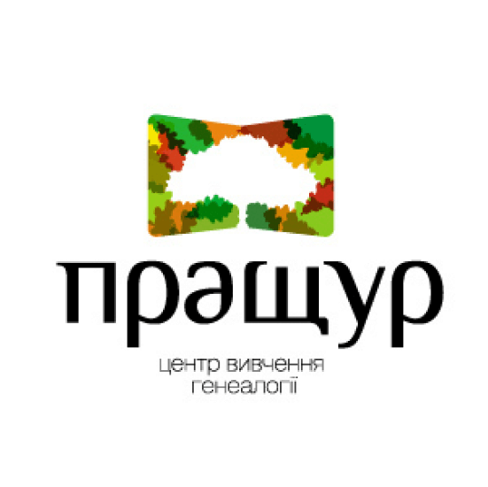
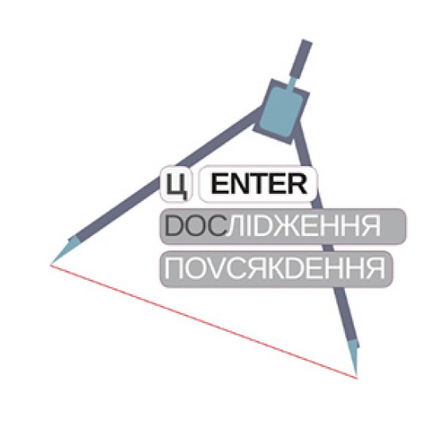
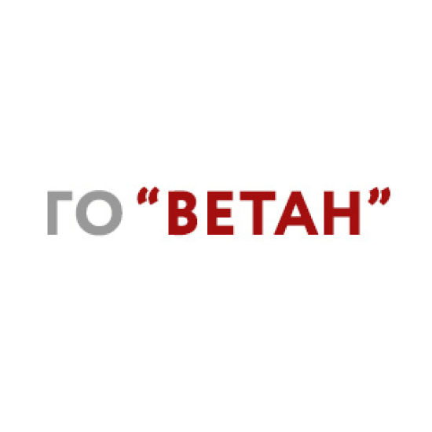
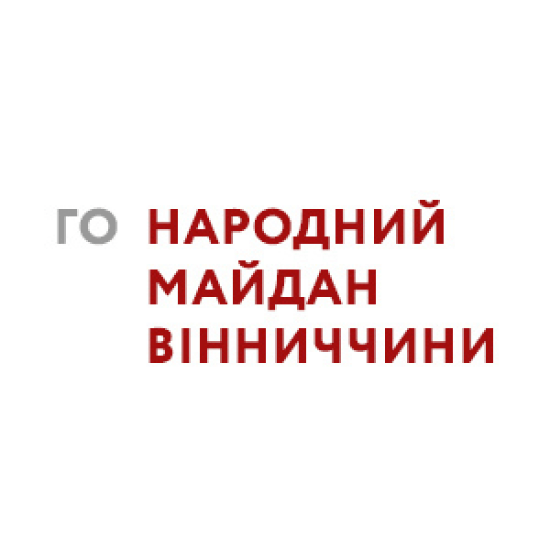
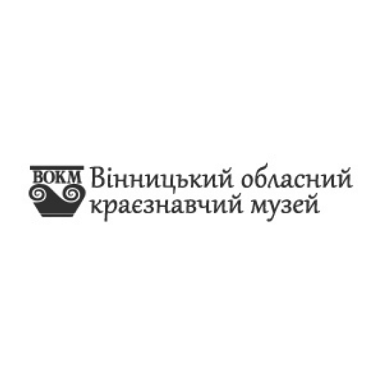
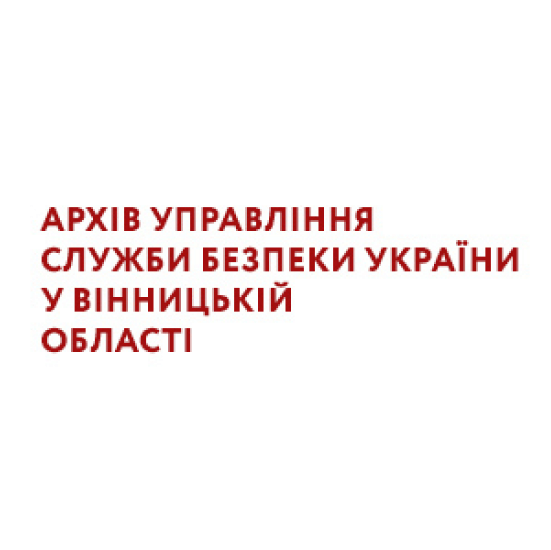
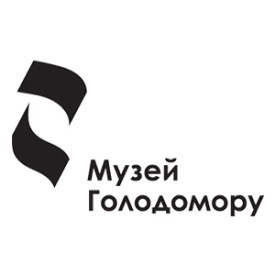

© 2024 memory.org.ua
Всі права захищені.
Всі права захищені.
ІСТОРИЧНІ ПЕРІОДИ
Українська революція та боротьба за збереження державної незалежності (1917-1921 рр.)Голодомор (1932-1933 рр.)Червоний терор в 1917-1939 рр.Україна під час Другої світової війни (1939-1945 рр.)Рух опору (ОУН, УПА)Україна в перші повоєнні роки (1945 — на початку 1950-х рр.)Україна в умовах десталінізації (1953-1964 рр.)Україна в період загострення кризи радянської системи (1965-1985 рр.)Розпад Радянського Союзу та незалежна Україна (1985-1991 рр.)Російсько-українська війнаУкраїнці в еміграціїВінницька психіатрична лікарняТабір для радянських військовополонених
Архів
Архів військовополоненихАВТОРСЬКИЙ КОНТЕНТ
Думки, висновки чи рекомендації належать авторам матеріалів, та можуть не співпадати з поглядами адміністрації сайту.Фінансова звітність за 2020р.Збір коштів на ЗСУСпіввласником сайту є ГО «Брат за брата України»
Власником сайту є ГО "Автомайдан @Вінниччина"e-mail: avtomaydanvin@gmail.comконтактний телефон: 063 933 0093